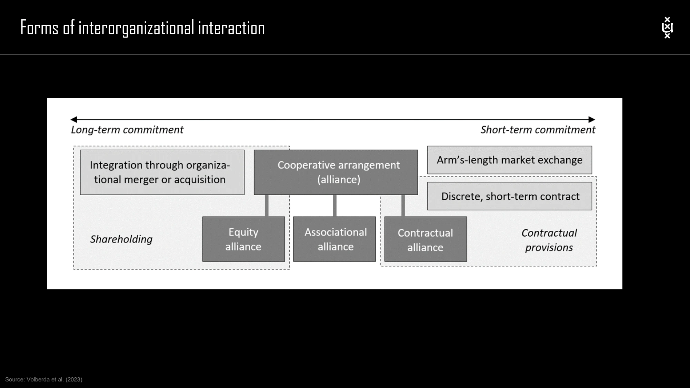

The framework
| Form | Core arrangement | What to distinguish |
|---|---|---|
| Equity joint venture | Partners establish a separate jointly owned entity. | The entity coexists with its owners; ownership, governance, risks and returns are shared. |
| Cooperative | Members jointly own and run an organization providing services to them. | The course emphasizes democratic control and benefits linked to patronage rather than a conventional JV's shareholding logic. |
| Minority participation / cross-shareholding | Firms take non-controlling equity positions. | A relationship can be established without creating a new entity. |
| Vertical contractual alliance | A long-term arrangement across different supply-chain stages. | Supplier–buyer or distribution relationships with intended joint benefits. |
| Horizontal contractual alliance | Cooperation at the same or similar value-chain stage. | Joint R&D, production, distribution, marketing or branding. |
| Licensing | Authorized use of specified assets or intellectual property for negotiated compensation. | Define the field of use, exclusivity, duration and payment structure. |
| Franchising | A broader license to use a business formula. | Includes an operating approach and often continuing support, training and controls. |
Key distinctions
Licensing versus franchising
In the lecture, all franchising arrangements are a form of licensing, but not all licensing includes a franchise. A franchise normally coordinates a broader set of practices and identity elements, so the relationship involves more than permission to use one asset.
Alliance or acquisition?
The decision framework compares the nature of synergies, the resources involved, redundant resources, market uncertainty and competition for resources. It associates different combinations with nonequity alliances, equity alliances or acquisitions. Use the original decision table below to examine the dimensions together rather than choosing from one isolated factor.
How to use it
- Define the joint objective and the resources each party contributes.
- Compare the required commitment, control and coordination.
- Choose a form consistent with those requirements and plan how the relationship will evolve.
Keep in mind
The classifications are the course's conceptual descriptions. A particular agreement's consequences depend on its actual design and context.
Must an alliance create a new company?
Reveal the explanation
No. Contractual alliances and direct equity participation can coordinate firms without forming a new entity.
Read the classroom original
Complete pages from the supplied lecture slides. Select a page to read, enlarge or browse its extracted text. Page numbers refer to the PDF’s physical page order.
